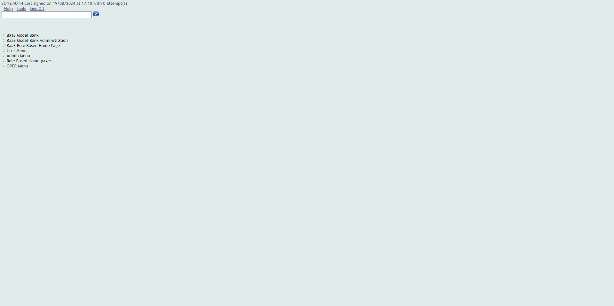
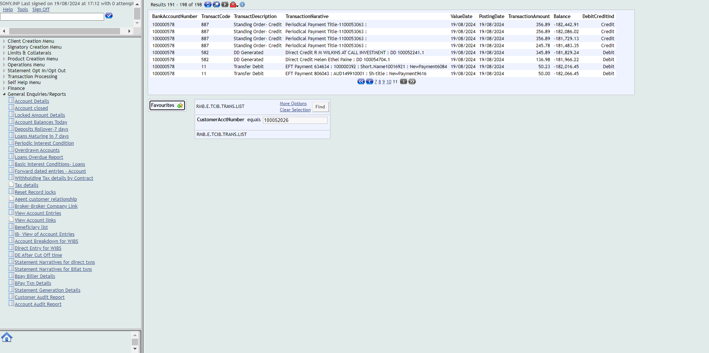

-
Internal transfer
12:34:52 PM / 31:25:632 Pass
Internal transfer
08.19.2024 12:34:52 08.19.2024 12:36:17 31:25:632 · #test-id=5Status Timestamp Details Info 12:34:57 PM close all the other opened windows Pass 12:34:59 PM Passed Info 12:34:59 PM User opens the T24 Url Info 12:35:03 PM 
Pass 12:35:03 PM Passed Info 12:35:03 PM User should be able to login to T24 Pass 12:35:08 PM Passed Info 12:35:08 PM The user should be able to fill the commandline Pass 12:35:13 PM Passed Info 12:35:13 PM user should be able to see the the balance of the account before performing internal transfer Pass 12:35:34 PM Passed Info 12:35:34 PM The user should be able to navigate to Account transfer button Pass 12:35:39 PM Passed Info 12:35:39 PM Enter the details in the account transfer fields Pass 12:35:47 PM Passed Info 12:35:47 PM Click on validate Pass 12:35:49 PM Passed Info 12:35:49 PM Click on commit Pass 12:35:52 PM Passed Info 12:35:52 PM Verify whether the transaction complete message is displayed after commiting Pass 12:36:07 PM Passed Info 12:36:07 PM Navigate to account entries Pass 12:36:08 PM Passed Info 12:36:08 PM Enter the account number and click on find button Pass 12:36:15 PM Passed Info 12:36:15 PM Verify whether the transaction is reflected in the accountentries Pass 12:36:17 PM Passed Pass 12:36:17 PM Scenario :: Internal transfer :: Passed -
Internal Transfer narrative
12:36:18 PM / 31:01:109 Pass
Internal Transfer narrative
08.19.2024 12:36:18 08.19.2024 12:37:19 31:01:109 · #test-id=51Status Timestamp Details Info 12:36:18 PM close all the other opened windows Pass 12:36:20 PM Passed Info 12:36:20 PM User opens the T24 Url Info 12:36:25 PM 
Pass 12:36:25 PM Passed Info 12:36:25 PM User should be able to login to T24 Pass 12:36:29 PM Passed Info 12:36:29 PM The user should be able to fill the commandline Pass 12:36:33 PM Passed Info 12:36:33 PM The user should be able to click on general enquiries buttom Pass 12:36:33 PM Passed Info 12:36:33 PM click on the IB-view of account entries Pass 12:36:33 PM Passed Info 12:36:33 PM Enter the account number Pass 12:36:34 PM Passed Info 12:36:34 PM click on find button Pass 12:36:39 PM Passed Info 12:36:39 PM The details of internal transfer should be reflected in the narratives Pass 12:37:19 PM Passed Pass 12:37:19 PM Scenario :: Internal Transfer narrative :: Passed -
External transfer
12:37:19 PM / 31:03:059 Pass
External transfer
08.19.2024 12:37:19 08.19.2024 12:38:22 31:03:059 · #test-id=85Status Timestamp Details Info 12:37:19 PM close all the other opened windows Pass 12:37:21 PM Passed Info 12:37:21 PM User opens the T24 Url Info 12:37:23 PM 
Pass 12:37:23 PM Passed Info 12:37:23 PM User should be able to login to T24 Pass 12:37:29 PM Passed Info 12:37:29 PM The user should be able to fill the commandline Pass 12:37:31 PM Passed Info 12:37:31 PM user should be able to see the the balance of the account before performing External transfer Pass 12:37:40 PM Passed Info 12:37:40 PM The user should be able to navigate to Account transfer button Pass 12:37:45 PM Passed Info 12:37:45 PM Enter the details in the account external transfer fields Pass 12:37:52 PM Passed Info 12:37:52 PM Click on validate Pass 12:37:54 PM Passed Info 12:37:54 PM Click on commit Pass 12:37:56 PM Passed Info 12:37:56 PM Verify whether the transaction complete message is displayed after commiting Pass 12:38:10 PM Passed Info 12:38:10 PM Navigate to account entries Pass 12:38:10 PM Passed Info 12:38:10 PM Enter the account number and click on find button Pass 12:38:20 PM Passed Info 12:38:20 PM Verify whether the external transaction is reflected in the accountentries Pass 12:38:22 PM Passed Pass 12:38:22 PM Scenario :: External transfer :: Passed -
External Transfer narrative
12:38:22 PM / 30:43:248 Pass
External Transfer narrative
08.19.2024 12:38:22 08.19.2024 12:39:05 30:43:248 · #test-id=131Status Timestamp Details Info 12:38:22 PM close all the other opened windows Pass 12:38:24 PM Passed Info 12:38:24 PM User opens the T24 Url Info 12:38:26 PM 
Pass 12:38:26 PM Passed Info 12:38:26 PM User should be able to login to T24 Pass 12:38:31 PM Passed Info 12:38:31 PM The user should be able to fill the commandline Pass 12:38:37 PM Passed Info 12:38:37 PM The user should be able to click on general enquiries buttom Pass 12:38:37 PM Passed Info 12:38:37 PM click on the IB-view of account entries Pass 12:38:37 PM Passed Info 12:38:37 PM Enter the account number Pass 12:38:39 PM Passed Info 12:38:39 PM click on find button Pass 12:38:44 PM Passed Info 12:38:44 PM The details of External transfer should be reflected in the narratives Pass 12:39:05 PM Passed Pass 12:39:05 PM Scenario :: External Transfer narrative :: Passed -
Internal transfer over limit
12:39:05 PM / 31:50:776 Pass
Internal transfer over limit
08.19.2024 12:39:05 08.19.2024 12:40:56 31:50:776 · #test-id=165Status Timestamp Details Info 12:39:06 PM close all the other opened windows Pass 12:39:07 PM Passed Info 12:39:07 PM User opens the T24 Url Info 12:39:11 PM 
Pass 12:39:11 PM Passed Info 12:39:11 PM User should be able to login to T24 Pass 12:39:17 PM Passed Info 12:39:17 PM The user should be able to fill the commandline Pass 12:39:20 PM Passed Info 12:39:20 PM user should be able to see the the balance of the account before performing internal transfer Pass 12:39:33 PM Passed Info 12:39:33 PM The user should be able to navigate to Account transfer button Pass 12:39:38 PM Passed Info 12:39:38 PM Enter the details in the account transfer for internal transfer overlimit Pass 12:39:45 PM Passed Info 12:39:45 PM Click on validate Pass 12:39:49 PM Passed Info 12:39:49 PM Click on commit Pass 12:39:51 PM Passed Info 12:39:51 PM Verify whether the transaction complete message is displayed after commiting Pass 12:40:19 PM Passed Info 12:40:19 PM The User clicks on signoff Pass 12:40:25 PM Passed Info 12:40:25 PM Login to authoriser account Pass 12:40:37 PM Passed Info 12:40:37 PM The user should be able to fill the commandline Pass 12:40:40 PM Passed Info 12:40:40 PM Navigate to unauthorised transactions Pass 12:40:43 PM Passed Info 12:40:43 PM Authorize the transaction Pass 12:40:47 PM Passed Info 12:40:47 PM Verify whether the transaction complete message is displayed after commiting Pass 12:40:48 PM Passed Info 12:40:48 PM Navigate to account entries Pass 12:40:48 PM Passed Info 12:40:48 PM Enter the account number and click on find button Pass 12:40:54 PM Passed Info 12:40:54 PM Verify whether the transaction is reflected in the accountentries Pass 12:40:56 PM Passed Pass 12:40:56 PM Scenario :: Internal transfer over limit :: Passed -
Internal Transfer overlimit narrative
12:40:56 PM / 31:44:364 Fail
Internal Transfer overlimit narrative
08.19.2024 12:40:56 08.19.2024 12:42:41 31:44:364 · #test-id=229Status Timestamp Details Info 12:40:57 PM close all the other opened windows Pass 12:40:59 PM Passed Info 12:40:59 PM User opens the T24 Url Info 12:41:02 PM 
Pass 12:41:02 PM Passed Info 12:41:02 PM User should be able to login to T24 Pass 12:41:09 PM Passed Info 12:41:09 PM The user should be able to fill the commandline Pass 12:41:11 PM Passed Info 12:41:11 PM The user should be able to click on general enquiries buttom Pass 12:41:12 PM Passed Info 12:41:12 PM click on the IB-view of account entries Pass 12:41:12 PM Passed Info 12:41:12 PM Enter the account number Pass 12:41:13 PM Passed Info 12:41:13 PM click on find button Pass 12:41:17 PM Passed Info 12:41:17 PM The details of internal transfer overlimit should be reflected in the narratives Fail 12:42:34 PM Failed Info 12:42:41 PM 
Fail 12:42:41 PM Expected condition failed: waiting for visibility of element located by By.xpath: (//table[@id='enquiryResponseData']//tbody/tr[9]/td[4]) (tried for 60 second(s) with 500 milliseconds interval) Build info: version: '4.17.0', revision: 'e52b1be057*' System info: os.name: 'Windows 10', os.arch: 'amd64', os.version: '10.0', java.version: '22.0.2' Driver info: org.openqa.selenium.chrome.ChromeDriver Capabilities {acceptInsecureCerts: false, browserName: chrome, browserVersion: 127.0.6533.120, chrome: {chromedriverVersion: 126.0.6478.126 (d36ace6122e..., userDataDir: C:\Users\THI220~1\AppData\L...}, fedcm:accounts: true, goog:chromeOptions: {debuggerAddress: localhost:9222}, networkConnectionEnabled: false, pageLoadStrategy: normal, platformName: windows, proxy: Proxy(), se:cdp: ws://localhost:9222/devtool..., se:cdpVersion: 127.0.6533.120, setWindowRect: true, strictFileInteractability: false, timeouts: {implicit: 0, pageLoad: 300000, script: 30000}, unhandledPromptBehavior: dismiss and notify, webauthn:extension:credBlob: true, webauthn:extension:largeBlob: true, webauthn:extension:minPinLength: true, webauthn:extension:prf: true, webauthn:virtualAuthenticators: true} Session ID: 45f166ed5a8d5c84bdca8f1fb395f307 org.openqa.selenium.support.ui.WebDriverWait.timeoutException(WebDriverWait.java:84) org.openqa.selenium.support.ui.FluentWait.until(FluentWait.java:228) com.frameium.genericfunctions.GenericFunctions.findElement(GenericFunctions.java:262) com.frameium.pageobject.UFS.AccountEntries.debitNarratives(AccountEntries.java:73) com.frameium.stepdef.Ufs.PaymentTest.transfernarrativeOverLimit(PaymentTest.java:427) ✽.The details of internal transfer overlimit should be reflected in the narratives(file:///D:/frameium/Frameium_allure/src/test/resources/Features/UFS/T24_Payments.feature:102) -
External transfer over limit
12:42:41 PM / 32:44:791 Fail
External transfer over limit
08.19.2024 12:42:41 08.19.2024 12:45:26 32:44:791 · #test-id=263Status Timestamp Details Info 12:42:41 PM close all the other opened windows Pass 12:42:43 PM Passed Info 12:42:43 PM User opens the T24 Url Info 12:42:47 PM 
Pass 12:42:47 PM Passed Info 12:42:47 PM User should be able to login to T24 Pass 12:42:52 PM Passed Info 12:42:52 PM The user should be able to fill the commandline Pass 12:42:58 PM Passed Info 12:42:58 PM user should be able to see the the balance of the account before performing internal transfer Pass 12:43:13 PM Passed Info 12:43:13 PM The user should be able to navigate to Account transfer button Pass 12:43:17 PM Passed Info 12:43:17 PM Enter the details in the account transfer for internal transfer overlimit Pass 12:43:26 PM Passed Info 12:43:26 PM Click on validate Pass 12:43:28 PM Passed Info 12:43:28 PM Click on commit Pass 12:43:30 PM Passed Info 12:43:30 PM Verify whether the transaction complete message is displayed after commiting Pass 12:44:09 PM Passed Info 12:44:09 PM The User clicks on signoff Pass 12:44:14 PM Passed Info 12:44:14 PM Login to authoriser account Pass 12:44:20 PM Passed Info 12:44:20 PM The user should be able to fill the commandline Pass 12:44:22 PM Passed Info 12:44:22 PM Navigate to unauthorised transactions Fail 12:45:22 PM Failed Info 12:45:26 PM Fail 12:45:26 PM Expected condition failed: waiting for visibility of element located by By.xpath: //*[contains(@id,'LOSHOMEPAGE')] (tried for 60 second(s) with 500 milliseconds interval) Build info: version: '4.17.0', revision: 'e52b1be057*' System info: os.name: 'Windows 10', os.arch: 'amd64', os.version: '10.0', java.version: '22.0.2' Driver info: org.openqa.selenium.chrome.ChromeDriver Capabilities {acceptInsecureCerts: false, browserName: chrome, browserVersion: 127.0.6533.120, chrome: {chromedriverVersion: 126.0.6478.126 (d36ace6122e..., userDataDir: C:\Users\THI220~1\AppData\L...}, fedcm:accounts: true, goog:chromeOptions: {debuggerAddress: localhost:9222}, networkConnectionEnabled: false, pageLoadStrategy: normal, platformName: windows, proxy: Proxy(), se:cdp: ws://localhost:9222/devtool..., se:cdpVersion: 127.0.6533.120, setWindowRect: true, strictFileInteractability: false, timeouts: {implicit: 0, pageLoad: 300000, script: 30000}, unhandledPromptBehavior: dismiss and notify, webauthn:extension:credBlob: true, webauthn:extension:largeBlob: true, webauthn:extension:minPinLength: true, webauthn:extension:prf: true, webauthn:virtualAuthenticators: true} Session ID: 45f166ed5a8d5c84bdca8f1fb395f307 org.openqa.selenium.support.ui.WebDriverWait.timeoutException(WebDriverWait.java:84) org.openqa.selenium.support.ui.FluentWait.until(FluentWait.java:228) com.frameium.genericfunctions.GenericFunctions.findElement(GenericFunctions.java:262) com.frameium.pageobject.UFS.T24homepage.authoriserAuth(T24homepage.java:1272) com.frameium.stepdef.Ufs.PaymentTest.navigateToUnauthorisedTransactionsClick(PaymentTest.java:463) ✽.Navigate to unauthorised transactions(file:///D:/frameium/Frameium_allure/src/test/resources/Features/UFS/T24_Payments.feature:118) -
External Transfer overlimit narrative
12:45:26 PM / 31:55:774 Fail
External Transfer overlimit narrative
08.19.2024 12:45:26 08.19.2024 12:47:22 31:55:774 · #test-id=327Status Timestamp Details Info 12:45:27 PM close all the other opened windows Pass 12:45:28 PM Passed Info 12:45:28 PM User opens the T24 Url Info 12:45:34 PM 
Pass 12:45:34 PM Passed Info 12:45:34 PM User should be able to login to T24 Pass 12:45:36 PM Passed Info 12:45:36 PM The user should be able to fill the commandline Pass 12:45:47 PM Passed Info 12:45:47 PM The user should be able to click on general enquiries buttom Pass 12:45:47 PM Passed Info 12:45:47 PM click on the IB-view of account entries Pass 12:45:47 PM Passed Info 12:45:47 PM Enter the account number Pass 12:45:49 PM Passed Info 12:45:49 PM click on find button Pass 12:45:55 PM Passed Info 12:45:55 PM The details of internal transfer overlimit should be reflected in the narratives Fail 12:47:18 PM Failed Info 12:47:22 PM 
Started
Aug 19, 2024 12:34:52 PM
Ended
Aug 19, 2024 12:47:22 PM
Suite Passed
5
Suite Failed
3
Suite
Log events
Timeline